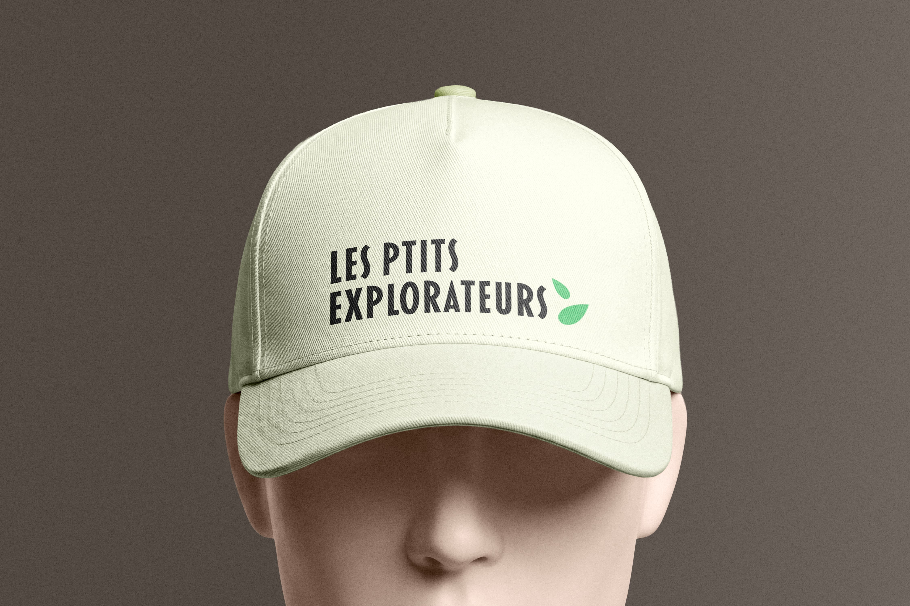
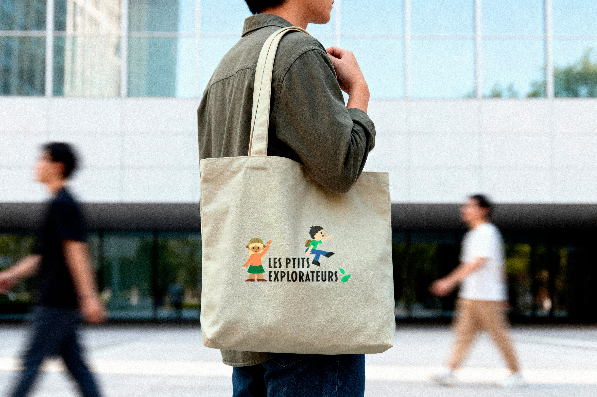
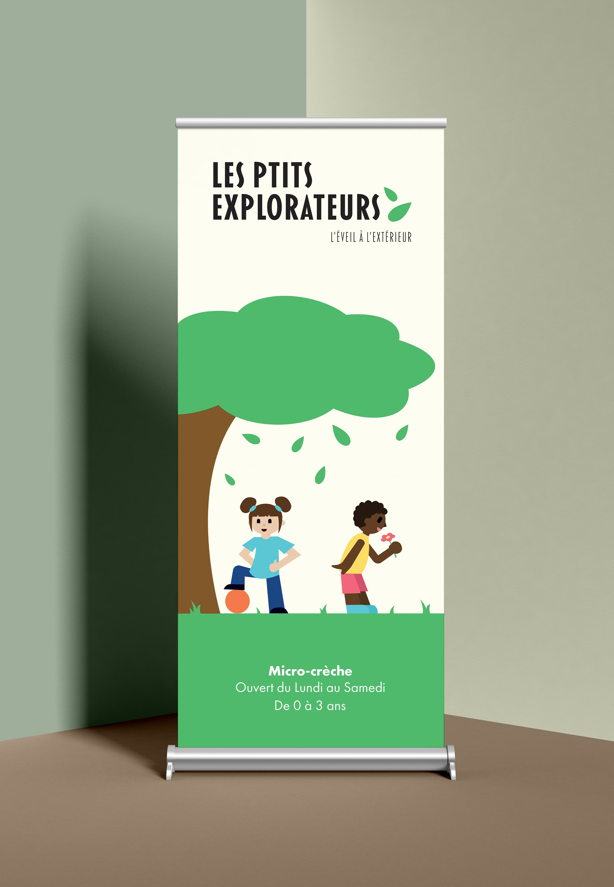

Les P'tits Explorateurs
Branding - Illustrator - Photoshop




Projet de cours. Le projet Les P'tits Explorateurs est une création de branding réalisée sur Illustrator et Photoshop pour une micro-crèche accueillant les enfants de 0 à 3 ans, autour du thème de l'éveil à l'extérieur. L'objectif : concevoir une identité accueillante, ludique et rassurante qui séduit les jeunes enfants par son univers illustré tout en parlant aux parents sensibles au design et à l'écologie. Identité & illustrations : le logotype affirmé s'accompagne d'illustrations douces et colorées mettant en scène des enfants en plein air, un arbre, des feuilles et des éléments naturels qui renforcent l'esprit de découverte et de nature. Déclinaisons & supports : l'identité a été déclinée sur plusieurs supports de communication et du quotidien — carte de visite, casquette, tote bag et kakemono présentant les horaires et l'accueil de la micro-crèche.